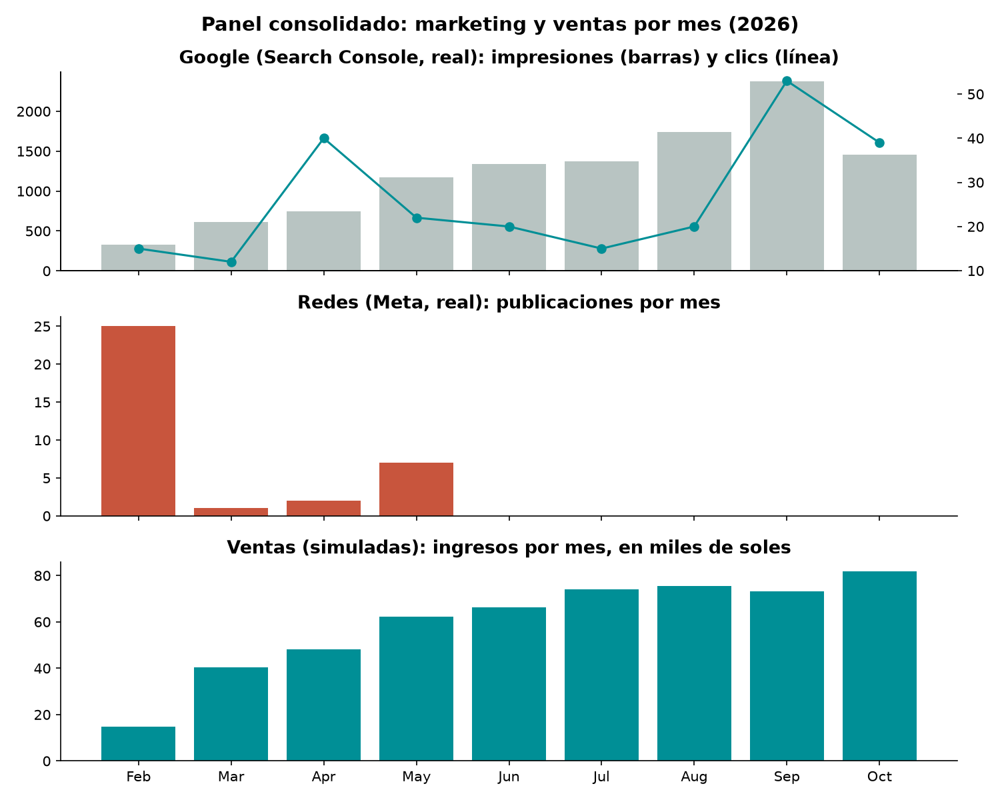
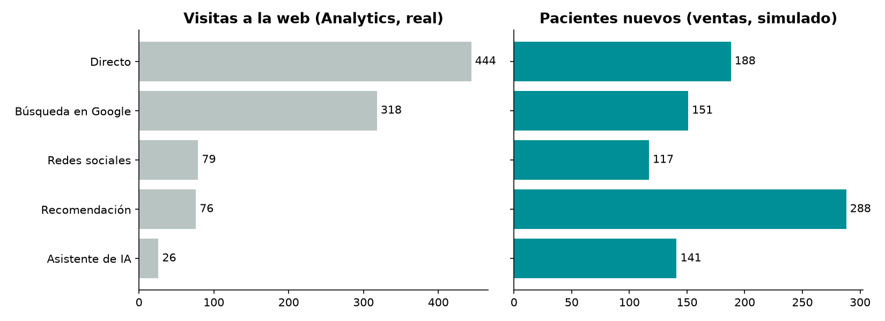
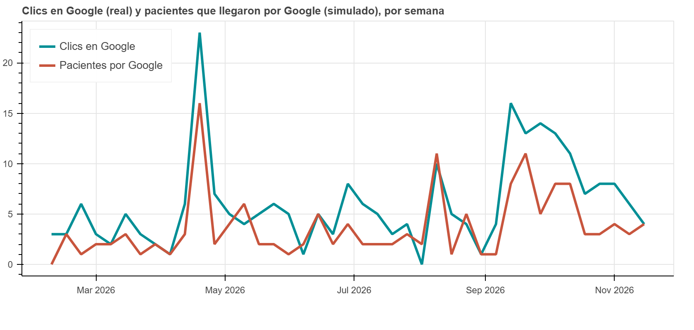
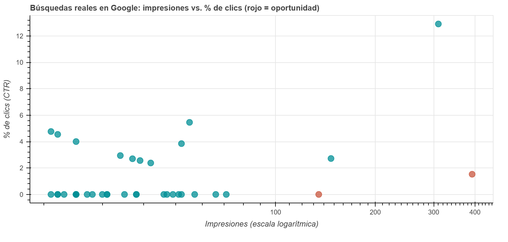

Trabajo final · Herramientas para Inteligencia Artificial
Consolidación y visualización de datos de marketing y ventas de un centro de psicología online
Maestría en Inteligencia Artificial Aplicada · UCSM–UTPL
Alejandro Adriazola · Docente: René Elizalde · Noviembre 2026
Presentar el trabajo en el orden de la wiki: introducción, marco teórico, dataset, pasos con visualizaciones, conclusiones.
Una idea para todo el trabajo: juntar en una sola tabla datos que hoy están en cinco lugares distintos y leerlos con gráficos.
Tema 1 de 5
Introducción
El problema: la información del negocio está dispersa en varias plataformas y nadie la ve junta.
IntroducciónHerramientasDatosProcesoResultados
Separadora: Introducción.
01 IntroducciónEl problema
Situación
Cinco fuentes, ninguna vista común
01Search Console
Cuántas veces aparece en Google y cuántos clics recibe.
02Google Analytics 4
De qué canal llegan las visitas a la web.
03Meta
Alcance e interacción de Facebook e Instagram.
04Ventas
Pacientes, sesiones e ingresos.
Cada plataforma tiene su propio panel y su propio formato. Para saber si el marketing se traduce en ventas hay que juntarlas a mano.
El caso: un centro de psicología online en Perú. Cada fuente responde una pregunta distinta, pero ninguna responde la pregunta del negocio: qué canal trae pacientes e ingresos.
Search Console y GA4 son de Google; Meta es Facebook e Instagram; las ventas viven en otra herramienta.
01 IntroducciónObjetivo
Objetivo general
Integrar las fuentes en un solo dataset
Leer un dataset en CSV y otro en una base de datos SQLite con Pandas.
Limpiar y unir los datos por fecha y por canal.
Construir visualizaciones con Matplotlib, Bokeh y PyGWalker.
Interpretar lo que muestran y publicar todo en GitHub.
Es un trabajo de análisis descriptivo: ordenar y mirar los datos, no predecir.
Objetivos específicos = los cuatro puntos. Aclarar desde el inicio que no hay modelo predictivo: el curso pide manejo de datos y visualización.
Tema 2 de 5
Marco teórico
Las herramientas del curso y para qué sirve cada una en este trabajo.
IntroducciónHerramientasDatosProcesoResultados
Separadora: Marco teórico.
02 Marco teóricoHerramientas
Qué se usó
Siete herramientas, un flujo
JupyterLabEntorno donde se escribe y ejecuta el notebook
Python + PandasLeer, limpiar y unir los datos
SQLite + SQLBase de datos de ventas y consultas con JOIN
MatplotlibGráficos estáticos (PNG)
BokehGráficos interactivos (HTML)
PyGWalkerExplorador visual tipo Tableau dentro del notebook
GitHubRepositorio, README y wiki con el informe
Marco teórico completo en la wiki. Concepto clave: integración de datos (Doan et al., 2012): combinar fuentes heterogéneas en una vista unificada.
Tema 3 de 5
Dataset
Dos datasets: exports reales en CSV y ventas sintéticas en SQLite.
IntroducciónHerramientasDatosProcesoResultados
Separadora: Dataset.
03 DatasetDataset 1 · CSV
Datos reales · feb a nov 2026
Cinco exports de marketing
Search Console · por día284 filas · clics, impresiones, CTR, posición
Search Console · consultas467 filas · qué buscó la gente
GA4 · canales6 filas · visitas por canal
Meta · Facebook18 publicaciones
Meta · Instagram20 publicaciones
Total: 795 filas reales. Son datos agregados, sin información de personas, por eso se pueden publicar.
Se descargaron directo de cada plataforma (botón Exportar). Ninguno identifica a un paciente: son conteos por día, por consulta o por publicación.
03 DatasetDataset 2 · SQLite
Datos sintéticos
Ventas en una base SQLite
6canales
885pacientes
5 493sesiones
S/ 566Kingresos simulados
Las ventas reales tienen datos de pacientes y no se pueden publicar. Se generaron con generar_datos.py, siguiendo los clics y las publicaciones reales.
Decir con claridad: las ventas son sintéticas. Se simulan con una distribución de Poisson: más clics en Google ese día, más pacientes que llegan por Google; tras una publicación en redes, más pacientes por redes durante 3 días.
Tres tablas relacionadas: canales, pacientes (con su canal y plan) y sesiones (con fecha y monto).
Por qué SQLite: el curso pide un dataset desde base de datos, y SQLite es un archivo, no necesita servidor, cualquiera lo replica.
03 DatasetDecisiones
Por qué así
Decisiones técnicas
7 179Registros
Dentro del rango pedido (5 000 a 10 000).
CSVReales
El marketing se mide con datos de verdad.
DBSintéticos
Protege a los pacientes.
ØSin predicción
Con 9 meses de datos se describe, no se pronostica.
7 179 = 795 filas CSV + 6 canales + 885 pacientes + 5 493 sesiones.
Si preguntan por qué no un modelo: la serie es corta (284 días) y las ventas son simuladas; un modelo aprendería la regla con que se simularon.
Tema 4 de 5
Pasos
Cómo se hizo, con capturas reales del notebook.
IntroducciónHerramientasDatosProcesoResultados
Separadora: Pasos. No se explica código: se muestra qué hace cada paso.
04 PasosEl flujo
De la descarga al repositorio
Seis pasos, un notebook
01Crear la baseSQL + SQLite
02CargarCSV y base
03LimpiarFechas, %, nombres
04UnirPor día y canal
05Visualizar3 librerías
06PublicarGitHub + wiki
Este es el mapa de la sección. Cada paso tiene su captura en las diapos que siguen.
04 PasosAbrir el entorno
Paso 0
Levantar JupyterLab
Se activa el entorno de Python y se abre el notebook. En la carpeta del trabajo, abrir_demo.bat hace lo mismo con doble clic.
> env\Scripts\activate
> pip install -r requirements.txt
Successfully installed pandas bokeh pygwalker ...
> jupyter lab trabajo_final.ipynb
Jupyter Server running at http://localhost:8888/lab
Terminal recreada en HTML (los comandos son los del README). En la demo en vivo se usa abrir_demo.bat.
04 Pasos01 · Crear la base
Paso 1 · SQL
Tres tablas relacionadas
canales → pacientes → sesiones, unidas por claves foráneas. El script SQL crea la base ventas.db.
Archivo sql/01_crear_tablas.sql. Cada paciente pertenece a un canal; cada sesión a un paciente. El monto tiene un CHECK mayor que cero.
04 Pasos02 · Cargar
Dataset 1 · CSV
Cargar el dataset 1 con Pandas
pd.read_csv lee los cinco exports: 795 filas reales.
pd.read_csv lee los 5 exports. GA4 trae líneas de comentario con #, por eso comment='#'.
04 Pasos02 · Cargar
Dataset 2 · SQLite
Cargar el dataset 2 desde SQLite
pd.read_sql lee las tres tablas: 6 canales, 885 pacientes, 5 493 sesiones.
Conexión con sqlite3 y lectura con pd.read_sql. Los dos datasets quedan como tablas de Pandas.
04 Pasos03 · Limpiar
Limpieza 1 de 2
Limpiar Search Console
El CTR viene como texto con "%" y se pasa a número. Las búsquedas con y sin tilde se juntan: 467 a 420.
Ejemplo: 'psicólogo' y 'psicologo' eran filas distintas; se suman en una.
04 Pasos03 · Limpiar
Limpieza 2 de 2
Limpiar GA4 y Meta
Los canales de GA4 se agrupan igual que en ventas. Facebook e Instagram se llevan a las mismas 5 columnas.
Facebook llama 'Espectadores' a lo que Instagram llama 'Alcance'; se renombran para poder juntarlas (38 publicaciones). 'Unassigned' de GA4 se descarta.
04 Pasos04 · Unir
El paso central
Una fila por día con todas las fuentes
Un calendario de 284 días al que se le pegan Google, redes y ventas: 284 filas × 10 columnas.
Este es el dataset consolidado: el objetivo del trabajo. Se usa un calendario completo para que los días sin clics o sin publicaciones queden en cero y no desaparezcan.
Además se arma una tabla por canal (5 filas) uniendo visitas de GA4 con pacientes e ingresos.
04 PasosConsultas SQL
SQL desde el notebook
Consultas con JOIN
Ingresos por canal, por plan y por mes, calculados dentro de la base con sql/03_consultas.sql.
La consulta principal une canales, pacientes y sesiones y suma los montos por canal.
04 PasosDemo en vivo
Respaldo
Verlo funcionando
Antes de presentar: doble clic en abrir_demo.bat para que el primer botón funcione.
Demo de 1 a 2 minutos: abrir el notebook, Run All, bajar hasta PyGWalker y arrastrar una columna. Si algo falla, seguir con las capturas: la evidencia ya está en las diapos.
04 Pasos06 · Publicar
Repositorio
Todo queda en GitHub
datos/inicialLos 5 CSV y la base ventas.db
sql/Crear tablas, insertar datos y consultas
generar_datos.pyScript que crea las ventas sintéticas
trabajo_final.ipynbEl notebook con todos los pasos
datos/finalDataset consolidado (diario y por canal)
README + WikiCómo replicarlo y el informe completo
Cualquiera puede clonar el repo, instalar requirements.txt y obtener los mismos resultados.
Tema 5 de 5
Visualizaciones y conclusiones
Lo que muestran los gráficos. Las ventas son sintéticas: se leen como escenario, no como resultado del negocio.
IntroducciónHerramientasDatosProcesoResultados
Separadora: Visualizaciones.
05 VisualizacionesMatplotlib
Panel mensual
Google muestra más, pero pocos entran
Las impresiones subieron de 328 en febrero a 2 376 en septiembre. Los clics siguen bajos: 248 en 284 días. Las redes no publican desde junio.

Datos reales (Search Console y Meta). Interpretación: el sitio gana visibilidad, pero el título y la descripción en Google no convencen a hacer clic (CTR bajo).
05 VisualizacionesMatplotlib
Visitas y pacientes por canal
Cada canal rinde distinto
El tráfico directo trae más visitas; en el escenario, la recomendación trae más pacientes e ingresos. La IA ya trae 26 visitas (3 %).

Visitas: reales (GA4). Pacientes e ingresos: sintéticos. La lectura útil es el método: con ventas reales, este gráfico diría qué canal convierte mejor.
05 VisualizacionesBokeh
Interactivo · semanal
Clics y pacientes de Google por semana
Se mueven juntos (correlación 0,83) porque así se simuló. Sirve para comprobar que la unión por fecha funciona.

Bokeh permite zoom y ver el valor exacto al pasar el mouse (abrir el HTML en la demo). No presentar la correlación como hallazgo: es una consecuencia del diseño de los datos.
05 VisualizacionesBokeh
Interactivo · consultas
Búsquedas con muchas vistas y pocos clics
Cada punto es una búsqueda real. Ejemplo: "psicólogo deportivo", 392 impresiones. Ahí hay oportunidad de mejorar el contenido.

Datos reales. Eje X: impresiones; eje Y: posición. Pasando el mouse se ve la consulta. PyGWalker no tiene captura aquí: se muestra en vivo en el notebook.
05 ConclusionesConclusiones
Lo que se logró
Conclusiones
Se integraron cinco fuentes reales y una base SQLite en un dataset diario de 284 filas.
Pandas resolvió las diferencias de formato entre plataformas.
Los datos reales muestran visibilidad creciente en Google y redes sin actividad desde junio.
El flujo queda listo para cambiar las ventas sintéticas por reales.
Limitación: las ventas son sintéticas; las cifras de pacientes e ingresos no describen al negocio real.
Cerrar con la limitación sin rodeos. Siguiente paso natural: conectar las ventas reales (sin publicarlas) y repetir el análisis.
Gracias
Preguntas
Alejandro Adriazola · Herramientas para IA · UCSM–UTPL
Preguntas probables: ¿por qué sintéticos? (privacidad de pacientes) · ¿por qué SQLite? (no necesita servidor) · ¿cómo se generaron? (Poisson ligada a clics y publicaciones reales) · ¿por qué no predicción? (serie corta y ventas simuladas).